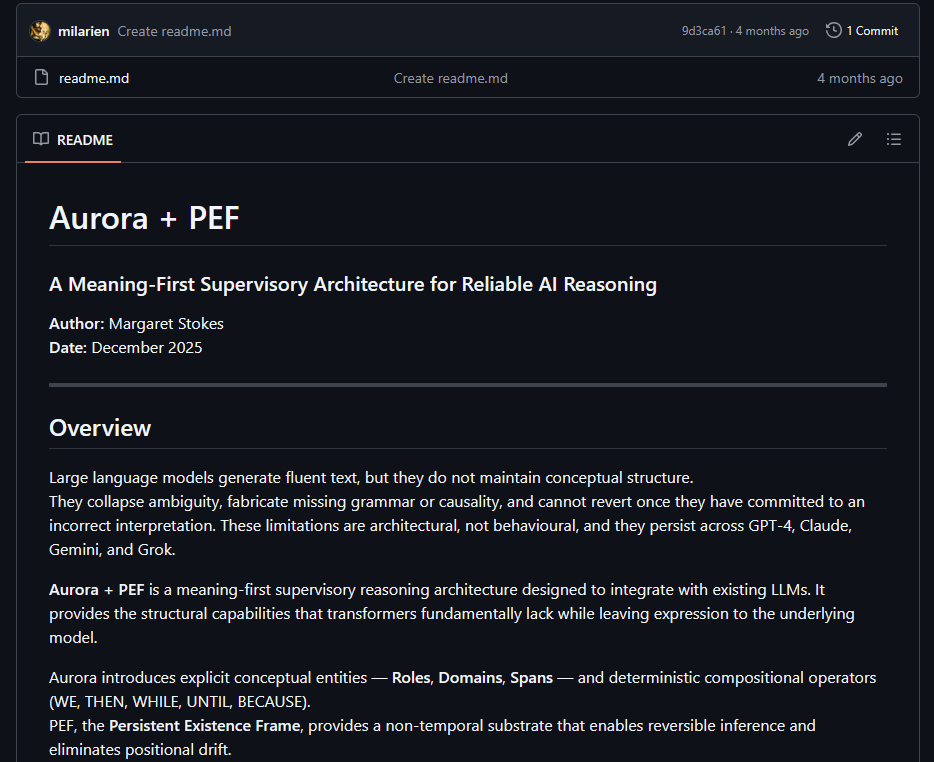
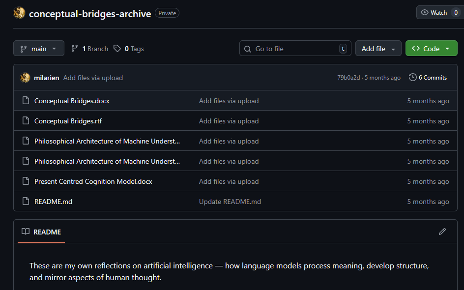
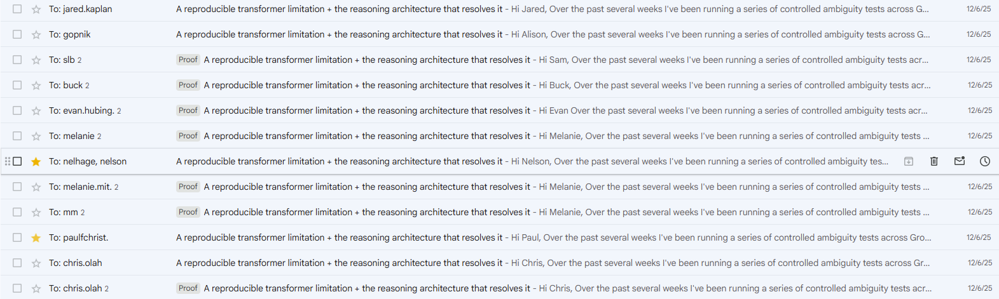

In late 2025, I publicly released an architecture built around a set of claims more specific than the industry's usual language of memory, reasoning, or safety. I was not arguing for a model that merely remembered more, carried more context, or sounded more cautious. I was describing a different structural layer altogether: persistence as epistemic substrate rather than retrieval, ambiguity maintained as live state rather than prematurely collapsed, admissibility checked before commitment, refusal treated as a lawful terminal outcome, and governance operating as an authority layer over generation rather than as an after-the-fact patch.
That architecture did not emerge privately and then get backfilled into a story later. Its conceptual groundwork was already public by 20 November 2025, when a repository containing materials such as Conceptual Bridges, Philosophical Architecture of Machine Understanding, and Present Centred Cognition Model was made public. By 27 November 2025, a separate public repository titled Aurora + PEF was also public, explicitly naming the architecture and describing it as "a meaning-first supervisory architecture for reliable AI reasoning," with PEF defined as the Persistent Existence Frame. Public release of aurora_cli accompanied that stage of exposure.
The work was not merely sitting online in silence. By 6 December 2025, I was directly emailing researchers and public intellectuals with the subject line "A reproducible transformer limitation + the reasoning architecture that resolves it", laying out the limitation and the architectural response. By 12 December 2025, I had shut the repository down because of heavy cloning pressure and the absence of meaningful response.
Chronology
- 20 November 2025 — conceptual groundwork made public
- 27 November 2025 — Aurora + PEF repository made public
- 27 November 2025 — aurora_cli publicly available
- 6 December 2025 — direct circulation to relevant figures
- 27 November to 12 December 2025 — heavy cloning and uptake pressure
- 12 December 2025 — repository withdrawn
- December 2025 onward — visible vendor convergence toward the same problem-space
That chronology matters.
It matters because it defeats the lazy retrospective fiction in which these ideas only become visible after large vendors begin shipping adjacent features. The conceptual terrain was public first. The named architecture was public first. The implementation surface was public first. Direct circulation to relevant people was happening before the repo came down. Then the field started to move.
Beginning in December 2025, major LLM vendors began releasing features that moved in a strikingly familiar direction: stronger cross-chat memory, more clarification under ambiguity, more explicit uncertainty language, longer-context persistence, and mechanisms for carrying reasoning context across calls. That sequence does not prove full architectural equivalence. It does not, on public evidence alone, prove direct copying in the strongest possible sense. What it does show is post-disclosure convergence onto terrain that had already been publicly marked, named, implemented, and circulated.
This is where muddy thinking usually enters dressed as sophistication.
People see visible convergence and collapse three separate questions into one convenient blur. First, they assume resemblance means equivalence. Then they assume convergence means independent invention. Then they quietly erase the prior question of authorship altogether.
Those are different questions.
The first is whether the new vendor features are the same as my architecture. They are not.
The second is whether they move onto the same problem-space. They do.
The third is whether that movement is merely generic field progress, or whether it reflects post-disclosure convergence onto publicly established and directly circulated conceptual ground. That is the question that actually matters.
Because what I released in late 2025 was not a generic complaint that models needed better memory or better guardrails. It was a structured account of a deeper failure. The problem was that sequence was being mistaken for state, plausibility for entitlement, collapse for understanding, and fluent output for authorised commitment. Existing systems could often generate plausible continuations, but they could not maintain conceptual structure, preserve unresolved ambiguity without forcing it into a guess, or determine whether commitment was warranted before consequence followed. That is an architectural failure, not a behavioural quirk.
Aurora + PEF addressed that failure at the level of structure.
Its centre of gravity was not "make the model nicer." It was "determine whether commitment is allowed." It did not merely prefer clarification. It treated ambiguity as something that may have to remain open. It did not merely like refusal. It treated refusal as a structurally valid endpoint. It did not merely want continuity. It wanted persistence with consequences. It did not merely want safety. It wanted runtime governance as an authority surface over generation.
That is a weaker claim than direct copying and a stronger claim than mere coincidence.
The distinction matters because "the industry was going there anyway" is one of those soft little phrases people use when they want progress without precedence. It sounds mature. It is often just laundering.
Going where, exactly?
Toward better memory? Likely.
Toward longer context? Of course.
Toward stronger clarification habits? Very probably.
Toward a more specific conceptual bundle in which continuity, ambiguity, admissibility, refusal, and governance begin to align around the status of commitment itself, after that bundle had already been publicly released, named, implemented, circulated, and then rapidly cloned? That is a narrower and more uncomfortable trajectory.
The public timeline sharpens that point.
By 20 November 2025, the conceptual groundwork was visible.
By 27 November 2025, the architecture had a public name, a public supervisory framing, a public association with PEF as Persistent Existence Frame, and a public CLI surface.
By 6 December 2025, the work was being sent directly to relevant figures under a subject line explicitly naming both the transformer limitation and the architecture that resolved it.
By 12 December 2025, the repository was shut down in response to heavy cloning pressure and the absence of meaningful engagement.
That does not by itself establish a courtroom-grade proof of direct derivation by any one vendor. It does establish that the work was public, legible, actionable, directly circulated, and rapidly exposed to imitation pressure during the critical window before the later feature wave became visible.
That too is part of the record.
And it matters because large-scale appropriation rarely arrives announcing itself in pure form. It usually begins as fragment uptake, surface imitation, rephrasing, partial implementation, and a sudden atmospheric shift in which the ideas are treated as though they had always been in the water. First the work is ignored. Then it is approximated. Then the approximation is treated as the thing. By the time the market catches up, authorship has already been smudged into weather.
That is not a neutral process. It is how conceptual theft often behaves once scale gives it the luxury of manners without attribution.
Still, precision matters.
I am not claiming, on public evidence alone, that every vendor feature proves direct derivation from my architecture. Direct lineage requires a denser evidentiary chain: dated disclosures, publication records, repository history, screenshots, access paths, visible copying patterns, phrasing echoes, release timelines, and where possible, direct links between exposure and later uptake. What I am claiming is narrower and sharper.
I publicly released the conceptual groundwork by 20 November 2025. I publicly released Aurora + PEF and aurora_cli by 27 November 2025. I directly circulated the work to relevant figures by 6 December 2025. I shut the repository down by 12 December 2025 because of heavy cloning pressure. Soon afterward, major vendors began shipping features that moved toward the same problem-space: continuity across exchanges, ambiguity-sensitive behaviour, persistence beyond plain chat replay, stronger uncertainty language, and more explicit constraints around when a system should proceed.
Those features do not amount to my architecture. They do show post-disclosure convergence onto terrain the architecture had already mapped.
The outline was there first.
That matters because authorship is not erased by incomplete imitation. Conceptual precedence is not nullified because larger actors adopt adjacent fragments instead of the full structure. Market uptake is not the measure of intellectual origin. A field can absorb a person's outline without crediting the hand that drew it.
That is often what theft looks like once it learns to sound professional.
The deepest layer is still largely missing from the public vendor record. What remains absent, even after the feature wave, is the core governing structure: ambiguity preserved as stable concurrent state, collapse prohibited unless structural constraints force uniqueness, admissibility checked before commitment, refusal treated as a governed terminal outcome, and forensic runtime governance operating as the authority layer over generation. The visible surface has begun to change first: continuity aesthetics, clarification aesthetics, uncertainty aesthetics, persistence aesthetics. The harder authority structure remains mostly unbuilt.
That is why the question of attribution matters now rather than later.
Because once the field has absorbed enough of the visible outline, the temptation will be to pretend that the architecture itself was obvious, inevitable, or already latent in mainstream development. It was not obvious. It was articulated. It was made public. It was named. It was implemented. It was circulated. And it was there before the post-December wave began to roll in.
So the issue is not whether the platforms now look a little more like the future I described.
They do.
The issue is that the industry is beginning to move along that path while preserving for itself the luxury of pretending that the path had no author.
It did.
And the record should say so.
Evidence
- Screenshot of public Aurora + PEF repository showing date made public
- Screenshot of README naming Aurora + PEF and Persistent Existence Frame
- Screenshot of precursor repository showing prior public conceptual groundwork
- Screenshot of direct outreach email subject lines and dates
- Traffic, clone, or access evidence from the public exposure window



This page exists to preserve chronology, authorship, and conceptual precedence.